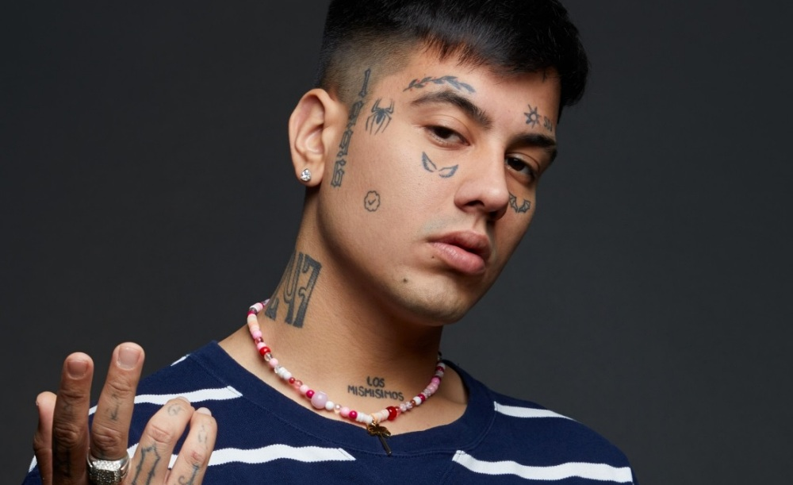

Duki
Mauro Ezequiel Lombardo Quiroga (Almagro, Argentina; 24 de juny de 1996) conegut artísticament com Duki, és un raper, cantant i freestyler argentí.
Datos sobre Duki
- Tiene 6 álbumes de estudio y 2 EP
- Su género principal es el trap, pero también se le ha esuchcado en otros géneros como reaggeton, jerk o rock
- Tiene muchos tatuajes, pero sus tatuajes mas famosos son las alas de diablo y angel que tiene debajo de los ojos
